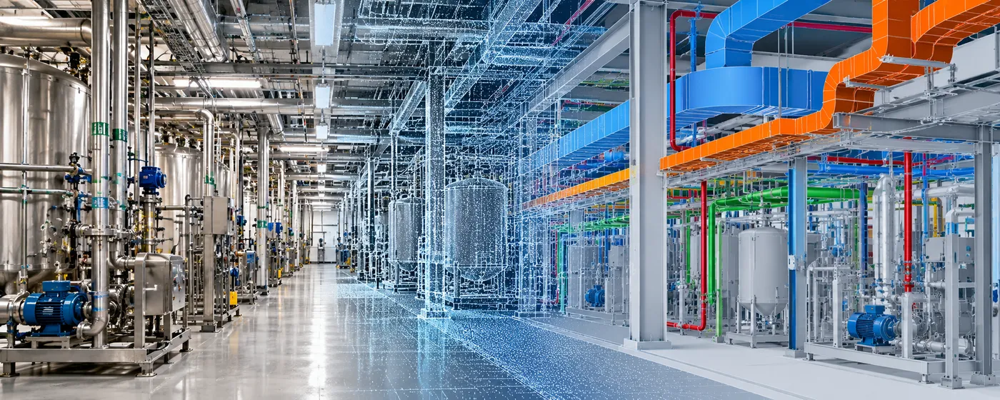

The Assignment
A pharmaceutical manufacturing plant in North Carolina was undergoing an expansion and retrofit to improve plant operations. The existing mechanical and electrical infrastructure needed to be integrated with newly designed systems without creating clashes during installation.
The assignment involved digitally capturing the existing plant conditions and developing an accurate 3D model that engineers and contractors could use to coordinate the new design with the existing MEP infrastructure.
Our Approach
CS TECH Ai's North American team used terrestrial laser scanning and Scan-to-BIM workflows to create an accurate digital representation of the existing manufacturing facility.
The engagement included:
- Terrestrial laser scanning of the existing plant
- Creation of a detailed point cloud from captured scan data
- Conversion of the point cloud into a Revit model
- Digital documentation of existing mechanical and electrical infrastructure
- Integration of the 3D model into the engineering and design environment
- Virtual routing of new electrical systems within the existing infrastructure
- Coordination of existing and proposed MEP systems
- Virtual design and planning across electrical, plumbing and HVAC trades
- Testing of different design scenarios before implementation
- Access to accurate measurements and dimensions without repeated site visits
The model allowed engineers to understand existing conditions and evaluate the integration of new systems before physical installation.